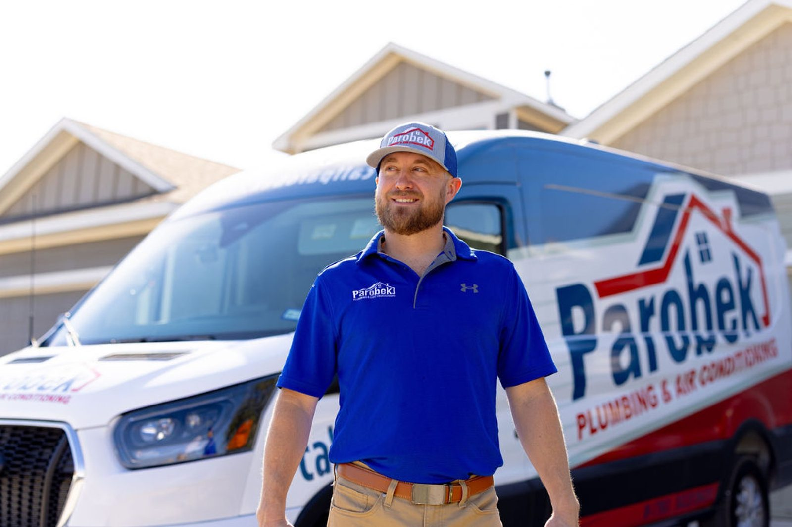

Plumbing & A/C · Bastrop, TX
A/C and plumbing, explained and done right
Techs who show you what they found, explain the options and fix it.

Thorough, and they tell you why
Both systems checked. Photos of what we see. Options explained, and the choice is yours.
01A/C repair and tune-ups
Diagnosing A/C problems and tune-ups where the tech explains each step and gives you options.
- A/C repair
- Maintenance and tune-ups

02Annual HVAC inspections
A full check of heating and cooling, with pictures of both systems and fresh filters.
- Heating and cooling check
- Filter change

03Water heaters and plumbing
Hot water heater repair, including thermostat problems, and plumbing repairs found, explained and fixed.
- Hot water heater repair
- Plumbing repair

The work
On the job


Kind words
What Bastrop customers say
4.9 · 4464 Google reviews
Jack came out from Parobek to do my annual inspection on my heating and air conditioning system. It took about 1 hour and he thoroughly checked both systems and showed me pictures of the systems and everything was in good working order. He went the extra mile and changed my filters inside the house. Jack was personable and professional. He has great taste in antiques and admired my roll top jewelers desk.
I highly recommend Parobek Plumbing! Waylon was so professional, kind, and knowledgeable. We sincerely appreciate his attention to detail and thorough explanation of what was needed to repair our hot water thermostat. I booked online, he arrived the vert next day, and our issue was fixed that same day. Thank you, Waylon!
Jarrett was awesome… Can’t say enough good things about him and the company. He was very thorough, very professional and also worked quickly to diagnose the problem, explain it thoroughly and offer solutions. A really great experience all the way around.

About
Plumbing and air conditioning, Bastrop
We work on A/C and plumbing from our base on Hoffman Road. Techs arrive in blue polos in a white van with the Parobek roof logo.
Friendly, thorough techs who take the time to explain the work. The crew has also turned out in pink for breast cancer awareness.
- ThoroughBoth systems checked, with pictures shown to the homeowner.
- Clear explanationsNothing rushed. Options laid out.
- Quick turnaroundBook online and a visit can follow the next day.
Find us
Find the shop
329 Hoffman Rd, Bastrop, TX 78602
Open 24 hours, seven days a week. Call, or book online.
Hours
- Mon
- Open 24 hours
- Tue
- Open 24 hours
- Wed
- Open 24 hours
- Thu
- Open 24 hours
- Fri
- Open 24 hours
- Sat
- Open 24 hours
- Sun
- Open 24 hours